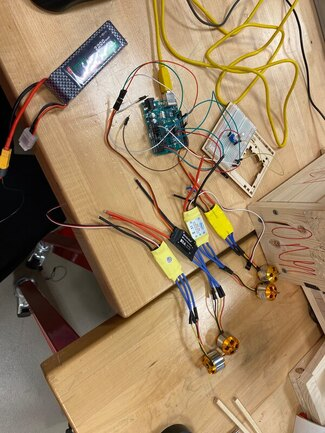
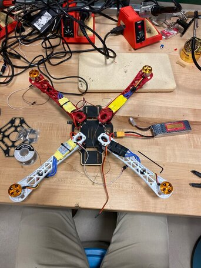
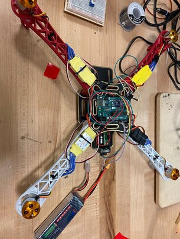
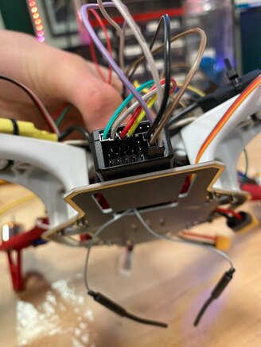
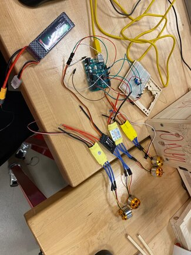
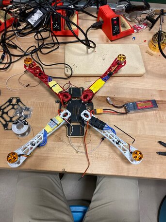
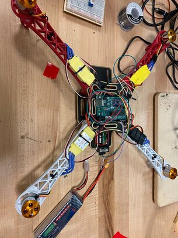
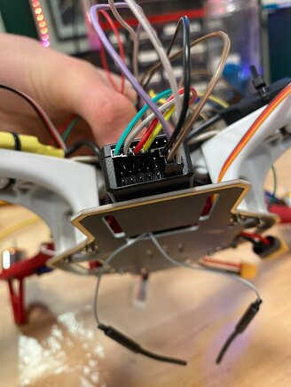

Work at Landis+Gyr

Developed and implemented a user interface (UI) for an electrical meter testing fixture, focusing on both front-end design (display, buttons, layout) and integration with backend hardware systems.
The video on the left shows a UI I developed that interfaces with an electrical meter testing fixture. It communicates with an Arduino, which translates UI commands into SCPI commands for the voltage and current sources stacked below the meters. The UI was originally written in C and I was tasked with translating it into Python.
The video on the right features a current transformer (CT) board that I helped design and for which I solely wrote the code to control the ballast resistors. This allowed for variable control of the output current when attached to three CTs, reaching up to 600 amps.
Drone Project
This project showcases my custom-built drone. Watch the video below:
 








CS50 Projects
Degrees
Search for shortest path of relationships in a dataset of actors and movies (CS50 AI Project).
View Code on GitHubMinesweeper
Build an AI that plays the classic Minesweeper game intelligently (CS50 AI Project).
View Code on GitHubTic Tac Toe
Implement a minimax AI that plays Tic Tac Toe optimally (CS50 AI Project).
View Code on GitHub